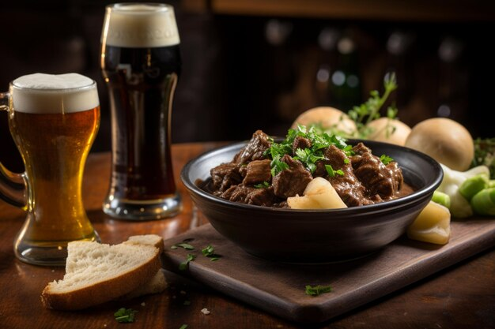
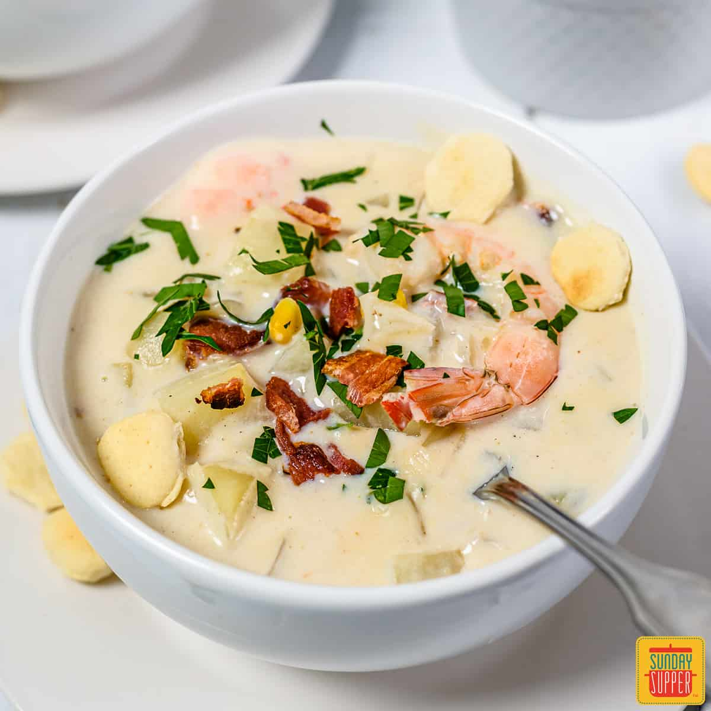

Welcome to Pots & Pints
Traditional Irish Cuisine & Craft Brews Since 2024

Delicious Irish Stew
Slow-cooked with traditional ingredients for a hearty taste.

Fresh Seafood Chowder
A creamy blend of Irish seafood, perfect for any occasion.
Our Specialties
Immerse Yourself in the Irish Experience
A perfect blend of tradition and modernity awaits you at Pots & Pints.
Enjoy seasonal specials, live entertainment, and a warm welcome every time you visit.
What Our Guests Say
"The best Irish stew I’ve ever had! The perfect pint of Guinness made it even better." - Sarah L.
"I felt like I was transported to a pub in Ireland. Such an authentic experience." - James T.
"Wonderful service and the seafood chowder was divine. Highly recommend!" - Emma R.
Latest News & Events
- January 10th: Live Irish music night featuring The Dubliners!
- February 5th: "Taste of Ireland" special menu week.
- March 17th: Celebrate St. Patrick's Day with us! Live entertainment and traditional dishes all day.